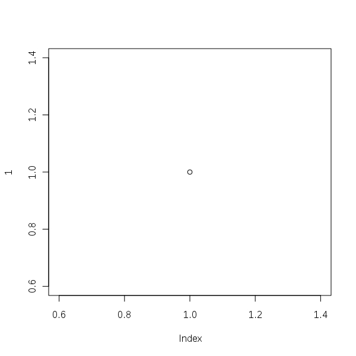

> options(asciiType = "t2t")
> x <- 2 > sqrt(x) [1] 1.414214 > x^2 [1] 4
> ascii(head(esoph))
| agegp | alcgp | tobgp | ncases | ncontrols | |
|---|---|---|---|---|---|
| 1 | 25-34 | 0-39g/day | 0-9g/day | 0.00 | 40.00 |
| 2 | 25-34 | 0-39g/day | 10-19 | 0.00 | 10.00 |
| 3 | 25-34 | 0-39g/day | 20-29 | 0.00 | 6.00 |
| 4 | 25-34 | 0-39g/day | 30+ | 0.00 | 5.00 |
| 5 | 25-34 | 40-79 | 0-9g/day | 0.00 | 27.00 |
| 6 | 25-34 | 40-79 | 10-19 | 0.00 | 7.00 |
> ascii(summary(table(1:4, 1:4)))
> plot(1)

2+2 equal to 4.